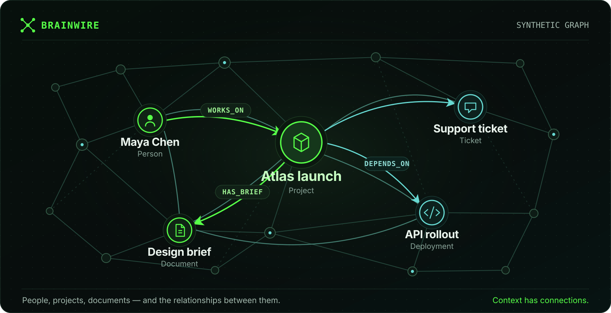

Many graphs.
Clear schemas.
Independent named graphs, ontology catalogs, typed relationships and stable entity identities.
ENTITIES. RELATIONSHIPS. DURABLE STATE.
Give your applications a graph to work with. Write from Python, query with a supported subset of Cypher, and keep your data on a persistent volume.
A source beta for controlled trials. A tag is not proof of a published image: check the matching release workflow and tested image digest before pulling. Production qualification remains open.

Independent named graphs, ontology catalogs, typed relationships and stable entity identities.
Bolt connectivity, parameterized queries and bounded batches for nodes and relationships.
RocksDB transactions and WAL durability. Retain the volume across container restarts.
Clone the repository, then run this from its root with Docker Engine and Compose installed. The first build compiles RocksDB and can take several minutes.
docker compose -p brainwire-demo -f deploy/compose.demo.yaml \
up --build --wait --wait-timeout 900Connect to bolt://127.0.0.1:7687, database demo. This synthetic demo binds the published port to localhost and explicitly opts into unauthenticated development mode. The server refuses non-loopback unauthenticated listeners by default. Use an auth overlay and encrypted network boundary for any shared environment.
Python first write ↗Persistent Docker setup ↗Protected containers ↗
Use nodes with a fixed label and stable entity_id, typed relationships, parameters, UNWIND, CREATE, MERGE, node property updates and removals. Edge property changes are available through the Python helper. Scalar functions include size, coalesce, toLower and toUpper.
The repository Python helper accepts lists, generators and Arrow objects for bounded writes; it also supports property patches and deletion. It is not a published package. Cypher supports multi-hop and bounded variable-length reads, WITH, OPTIONAL MATCH, UNION, path/relationship values, and graph procedures. Each write batch is atomic; earlier batches remain committed if a later batch fails.
MATCH (c:Customer)-[:IN_SEGMENT]->(s:Segment)
RETURN c.name AS customer, s.name AS segment
LIMIT 20The quickstart applies the bundled ontology and writes Customer and Segment records. Unsupported syntax returns an error; read the exact grammar before porting an application.
Supported Cypher and limitations ↗Ontology indexed_fields and er_fields declare scalar lookup indexes for strings, booleans and finite numbers. entity_id has a separate primary lookup.
Online CREATE INDEX and DROP INDEX manage scalar indexes; a background builder exposes populating until backfill completes. Ready indexes can anchor equality, IN, ranges and STARTS WITH when the query shape is supported. Vector and full-text indexes are not included.
CALL db.indexes() YIELD label, property, state
RETURN label, property, stateSupported equality, IN, range and prefix predicates can use ready indexes; other expressions may scan. There is no cost-based planner or index intersection.
Read-only Cypher procedures project the graph into sparse CSR form within explicit node, relationship and memory bounds. A result LIMIT does not reduce the projection size.
graph.projectInspect projection size and sparse storage.
graph.degreeCount incoming and outgoing relationships.
graph.pagerankRank structural importance, with optional edge weights.
graph.reachableFind directed reachability and minimum hop depth.
graph.shortestPathReturn one minimum-hop directed path.
graph.wcc / graph.sccFind weakly or strongly connected components.
The same executor serves local CLI and Bolt queries. A standalone server owns its RocksDB directory; containers retain that directory on a persistent volume. The supplied Docker, Swarm and Kubernetes deployment profiles run a single instance.
Reopen committed local state after restart. Offline db check audits graph and index invariants; readiness probes do not perform that audit.
Create local checkpoints offline, or online through admin-only CALL db.checkpoint(name) into a configured root; restore and validate with the server stopped. Keep a tested restore procedure and a rebuildable source; a persistent volume alone is not a backup.
The connected TUI reads the running server over Bolt. Choose Ontology, Memory, Indexes or Graph with Tab or 1–4; refresh with r and open contextual help with ?. English is the default, with Portuguese available through --lang pt-BR.
The Graph pane shows IDs and directed links from a completed server sample: up to 20 outgoing relationship rows for one configured source and edge signature. Selection highlights a row; it does not expand that node or fetch arbitrary properties.
Connected graph setup and limits ↗Ontology shows permitted type connections; Graph shows stored relationships. Memory shows shared query reservation counters, not process RSS or total RocksDB use. The connected workspace is read-only; use Python or the CLI for queries and mutations.
Demo, offline and connected modes ↗The visual demo uses synthetic data. The offline backoffice inspects local files and named graphs with the server stopped; it cannot open the live server's RocksDB directory.
Named graphs, online catalog changes, supported Cypher, bounded Python batches, scalar indexes, local durability and read-only connected TUI inspection. The TUI supports English and Portuguese; these documentation pages are English.
Optional quorum replication has local fault-test evidence. Multi-machine Kubernetes/Swarm failover, production HA and operational recovery remain qualification gates. Multiple pods alone do not provide replication.
Read replication limitations ↗Historical node/edge revisions and AS OF traversal, vector/full-text search, object-storage-native persistence, sharding, a published Python package, and an agent runtime. Ontology versions and transaction snapshots are not data history. DuckLake ingestion compares pinned snapshots; it is not native CDC.
For measured performance, start with the current engine notes and local Neo4j/FalkorDB comparison conditions. These are synthetic local measurements, not production SLOs.
This is a static documentation landing page. It does not imply a hosted database or a publicly readable container package.